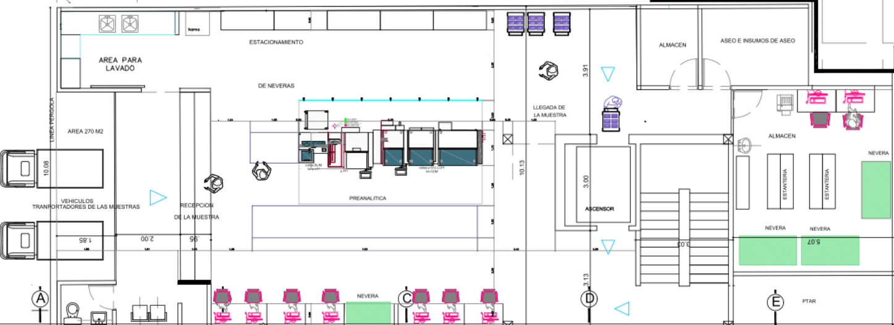

Proyecto de Automatización e implementación de soluciones diagnósticas (Oct '26 - Ago '27)
| Ubicación | Plataforma / Equipo | Configuración | Cantidad |
|---|---|---|---|
| Recepción y Pre-Analítica Descentralizada | |||
| Piso 1 | cobas p612 / BLIM / p471 | Clasificación, alicuotado y preparación | 1 Línea Integrada |
| Core Lab Automatizado (Química e Inmunoquímica) | |||
| Piso 3 | cobas pro | ISE Neo - c703 - e801 | 2 Líneas |
| Piso 3 | cobas pro | ISE Neo - c503 - c503 - e801 | 1 Línea |
| Hematología Integral | |||
| Piso 3 | Sysmex XN 9100-301 | XN + RU20 | 1 Línea |
| Automatización Total (TLA) y Archivo | |||
| Piso 3 | cobas 8100 | Solución modular de automatización | 1 Pista Central |
| Piso 3 | cobas p701 | Almacenamiento automatizado con cadena de frío | 1 Módulo |
navify Lab Operation no solo validará resultados, sino que orquestará la logística física entre las plantas.
Visión macro de los frentes de IT, Hardware y despliegue del Sistema de Información (LIS).
| Código | Fase / Tarea del Proyecto LIS | Inicio | Fin |
|---|---|---|---|
| 1.1 | PLANIFICACIÓN Y GESTIÓN INICIAL | 15/10/26 | 16/10/26 |
| 1.1.1 | Reunión de inicio (Kick-off) y Gobernanza | 15/10/26 | 15/10/26 |
| 1.2 | LEVANTAMIENTO DE INFORMACIÓN Y MAESTROS | 19/10/26 | 20/01/27 |
| 1.2.1 | Mapeo de datos y personalizaciones | 19/10/26 | 09/11/26 |
| 1.2.5 | Migración de Datos Históricos (Un año) | 27/11/26 | 04/12/26 |
| 1.2.7 | Validación de Maestros de Laboratorio (CUPS, Deltas) | 14/12/26 | 20/01/27 |
| 1.3 y 1.4 | DESARROLLO WEB-BI Y PERSONALIZACIONES | 21/01/27 | 25/02/27 |
| 1.3.1 | Desarrollo API/REST e Integración Web-BI | 21/01/27 | 28/01/27 |
| 1.5 | INTEGRACIÓN HIS Y DRIVERS DE ANALIZADORES | 21/01/27 | 08/03/27 |
| 1.5.2 | Configuración interfaces de analizadores | 22/01/27 | 12/02/27 |
| 1.5.3 | Mensajería HIS-LIS (Ingreso HL7 ORM) | 05/02/27 | 25/02/27 |
| 1.7 | PRUEBAS DE CALIDAD E INTEGRACIÓN GLOBAL (QA) | 01/03/27 | 29/04/27 |
| 1.7.2 | Pruebas masivas con Analizadores y Módulos LIS | 08/03/27 | 14/04/27 |
| 1.7.6 | Certificación Global de Calidad (Pase a Producción) | 29/04/27 | 29/04/27 |
| 1.8 | PILOTO EN SEDES DE TOMA DE MUESTRAS | 30/04/27 | 04/06/27 |
| 1.8.1 | Despliegue y atención pacientes reales (Go-Live Piloto) | 30/04/27 | 11/05/27 |
| 1.9 | DESPLIEGUE GRADUAL RED COMPENSAR (ROLLOUT) | 07/06/27 | 30/07/27 |
| 1.9.1 a 1.9.3 | Rollout Bloque Sabana, Sur, Occidente, Norte y Aliados | 07/06/27 | 16/07/27 |
| 1.9.4 | Rollout Bloque Calle 26 y Laboratorio Central (CPL) | 19/07/27 | 30/07/27 |
| 1.10 | ESTABILIZACIÓN Y CIERRE DE PROYECTO | 02/08/27 | 17/08/27 |
| 1.10.1 | Soporte Hypercare 24/7 y Medición KPIs | 02/08/27 | 13/08/27 |

